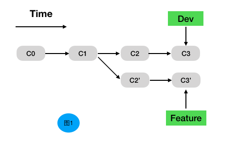
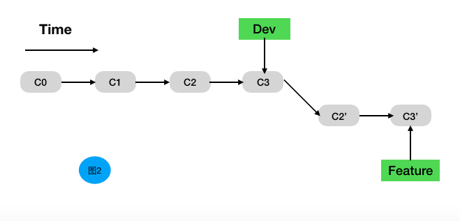
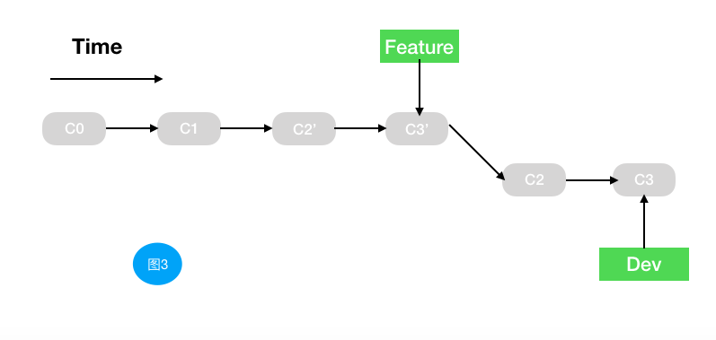

这篇文章主要说一下rebase的黄金法则问题，本篇博文是基于上一篇文章出现的，很多场景都是基于上一篇。建议大家先阅读上一篇。
git 整合来自不同分支的修改主要有两种方法：merge 操作和rebase操作，
merge初学者可能很熟悉。我们今天来主要说一下 rebase 操作，文章结尾会简单说一下 merge 操作的 –no-ff 参数问题。
rebase的简单定义：你可以把某一分支的所有修改都移至另外一个分支就像重新播放一样。
有点儿像金庸武侠小说里面的乾坤大挪移。
举个🌰
将设我们本地库的代码，如下所示
1 | A---B---C remotes/origin/master |
如果此时我们执行 git pull 操作，就会变成下面的样子，因为 pull 默认执行的是 merge 操作，多出来H这次没必要的提交。如下所示
1 | A---B---C remotes/origin/master |
如果我们执行 git pull –rebase 操作，将会变成下面的样子，这里我们用rebase代替了默认的merge操作
1 | remotes/origin |
rebase 作用就是变成线性了，这在多人协作的情况变得非常关键。因为多人合作是不允许随意制造分叉的。大家可以参考我这篇文章。
这就引出了这篇博文要主要阐述的问题，rebase golden rule 问题。
Rebase golden rule
“No one shall rebase a shared branch” — Everyone about rebase
简单来说就是不要在你的公共分支上做任何rebase操作。
再举一个🌰。
图一是我们做rebase操作前的样子
图二是我们正确rebase的结果，即在feature分支执行rebase develop命令

图三是我们错误rebase的结果，即违反黄金法则的结果，我们在develop分支上执行了rebase feature操作

当我们在图三这种情况下对develop分支进行提交的话，会发现和远程分支冲突，然后我们手动或自动解决冲突，继续提交上去之后发现，我们修改的功能代码已经提交上去了，但是当我们看我们提交历史的记录的时候会发现有一部分重复的提交log。
这就是问题所在，你的项目组长是绝对不允许在他的项目里出现这种情况，因为会影响后续的代码追查，code review等问题。
说完了这个问题，这篇博文的主要任务基本完成了，最后在简单说一下 merge 的 –no-ff 参数，这也是我们在分支合并的时候经常遇到的问题。
–no-ff 的意思就是关闭 merge 的 fast-forwarded，merge 操作默认执行的是 fast-forwarded。
fast-forwarded 的意思就是在合并分支的时候，如果不涉及三方合并，git 只会简单的移动指针。
再再举一个🌰
1 | dev |
此时我们执行 merge –no-ff 操作，将会得到如下图
1 | dev |
执行 merge 之后得到的结果如下
1 | dev |
如上git 将指针从C移到了E。
简单来说就是 –no-ff 的作用就是保持分支的非线性。方便我们看到分支的变化。